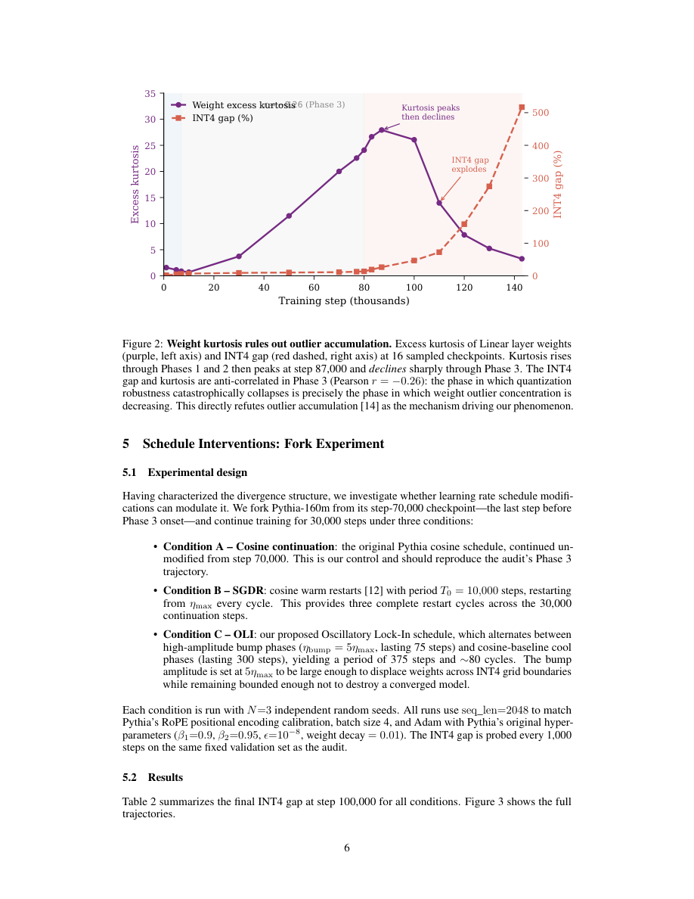

#1
★ 7/10
When Flat Minima Fail: Characterizing INT4 Quantization Collapse After FP32 Convergence
平坦最小值的失效：FP32收敛后INT4量化崩溃的系统性刻画

图 Figure · Page 6 of paper
🎯 FP32收敛恰恰触发而非避免INT4量化的灾难性崩溃
FP32 convergence triggers—not prevents—catastrophic INT4 quantization collapse in LLMs.
| 维度 | 中文 | English |
|---|---|---|
| ❓ 待解决 的问题 |
训练后量化（PTQ）默认认为，FP32充分收敛的模型就是"量化友好"的模型。但本文发现，INT4量化质量恰恰在FP32收敛*之后*出现灾难性崩溃。目前学界对这种崩溃发生的时机与机制缺乏系统性认知。 | Post-training quantization (PTQ) assumes that once a model is fully trained and converged in FP32, it is ready for quantization. This paper challenges that assumption, showing that INT4 quantization quality actually degrades catastrophically *after* FP32 convergence, not before. The community currently lacks a mechanistic understanding of when and why this collapse occurs. |
| 💡 解决 的亮点 |
• 首次对Pythia-160m全部154个训练检查点进行系统量化鲁棒性审计，揭示了FP32指标完全无法感知的三阶段分歧结构。 • 精确定位触发时机：INT4崩溃始于FP32困惑度收敛时，而非学习率开始衰减时，提供了更细粒度的预测信号。 • 通过峰度测量排除了权重异常值累积的机制假说，并证明INT8全程免疫，将根因锁定在INT4仅16级量化网格的粗粒度特性上。 | • First systematic audit of quantization robustness across all 154 public training checkpoints of Pythia-160m, revealing a three-phase divergence structure invisible to FP32 metrics alone. • Identifies the precise onset trigger: INT4 collapse begins when FP32 perplexity converges, not when the learning rate starts decaying — a finer-grained predictor than previously assumed. • Rules out weight outlier accumulation (via kurtosis) as the mechanism, and shows INT8 is fully immune, pinpointing the 16-level grid coarseness of INT4 as the key vulnerability. |
| 🧪 实验 内容 |
实验以Pythia-160m全部154个公开训练检查点为主要对象，对每个检查点施加无校准分组INT4探针，以INT4相对FP32的困惑度差距为核心评估指标，INT8作为对照组。分叉实验从预崩溃检查点出发，对余弦延续、SGDR热重启和所提出的OLI调度各运行9次独立实验，通过配对胜率和平均INT4差距降低量进行评估。 | The study uses all 154 publicly released training checkpoints of Pythia-160m as the primary experimental substrate. A calibration-free per-group INT4 probe is applied to each checkpoint as the evaluation tool, with INT4 perplexity gap (relative to FP32) as the core metric. INT8 is used as a control condition. A fork experiment at the pre-divergence checkpoint compares cosine continuation, SGDR warm restarts, and the proposed OLI schedule across 9 independent runs per condition, evaluated by pairwise win rates and mean INT4 gap reduction. |
| 📊 实验 结果 |
在爆炸性分歧阶段，INT4差距从11%飙升至517%，而FP32困惑度几乎没有变化。INT8在全部三个阶段均完全免疫。分叉实验中，SGDR对余弦调度的配对胜率为0/9（全面加速崩溃）；而所提出的OLI调度平均将INT4差距降低2.2个百分点，统计显著性极强（t = -5.46，p < 0.0001）。 | The INT4 gap compounds from 11% to 517% during the explosive divergence phase, while FP32 perplexity barely moves. INT8 remains fully immune across all three phases. In the fork experiment, SGDR achieves 0/9 pairwise wins against cosine (uniformly accelerating divergence), while the proposed OLI schedule reduces the INT4 gap by 2.2 percentage points on average, with strong statistical significance (t = -5.46, p < 0.0001). |
| 🏁 结论 | 本文证明，FP32收敛并不等同于量化就绪——收敛后的权重更新才是INT4崩溃的直接原因，这是一种标准训练指标完全无法感知的结构性失效模式。所提出的OLI学习率调度提供了经统计验证的实用缓解方案，完整的检查点审计为领域提供了可复用的诊断框架。 | This paper proves that FP32 convergence is not a proxy for quantization readiness — post-convergence weight updates are the proximate cause of INT4 collapse, a structured failure mode invisible to standard training metrics. The proposed OLI learning rate schedule offers a practical, statistically validated mitigation, and the full checkpoint audit provides a reusable diagnostic framework for the field. |
| 🔗 论文 链接 |
arXiv: 2604.15167v1 · 📥 PDF | |
⚙️ Method · 方法详解
作者对Pythia-160m全部154个公开训练检查点应用无校准的分组INT4探针，追踪整个训练过程中INT4与FP32困惑度差距的变化。通过测量权重峰度来检验异常值假说，并对比INT4与INT8的表现以隔离崩溃机制。最后，从预崩溃检查点出发，设计受控分叉实验，对比三种学习率调度方案（余弦延续、SGDR热重启和新提出的振荡锁定OLI），每种方案运行9次独立实验，评估调度设计是否能缓解量化崩溃。
The authors apply a calibration-free per-group INT4 probe to all 154 publicly available Pythia-160m training checkpoints and track the INT4 perplexity gap relative to FP32 perplexity across training. They measure weight kurtosis to test the outlier hypothesis and compare INT4 vs. INT8 behavior to isolate the mechanism. Finally, they run a controlled fork experiment starting from a pre-divergence checkpoint, comparing three learning rate schedules — cosine continuation, SGDR warm restarts, and a newly proposed Oscillatory Lock-In (OLI) — across nine independent runs each to assess whether schedule design can mitigate collapse.
🌟 Why It Matters · 为什么重要
随着INT4量化成为大语言模型部署的主流格式，本文揭示了一个关键盲区：标准FP32训练指标无法检测模型何时变得"不可量化"。检查点审计方法和OLI调度为从业者提供了具体工具，无需从头重训即可诊断并部分预防INT4崩溃。
As 4-bit quantization becomes the dominant deployment format for large language models, this work reveals a critical blind spot: standard FP32 training metrics cannot detect when a model is becoming un-quantizable. The checkpoint audit methodology and OLI schedule give practitioners concrete tools to diagnose and partially prevent INT4 collapse without retraining from scratch.